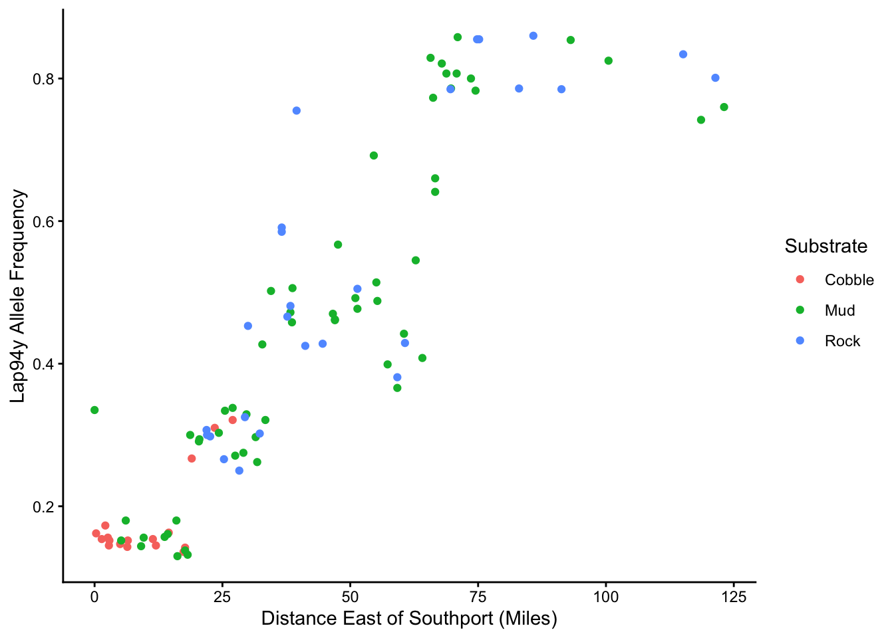
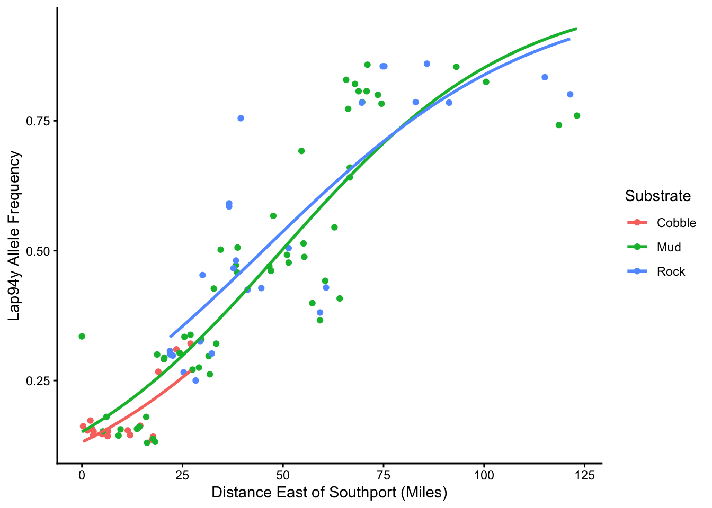
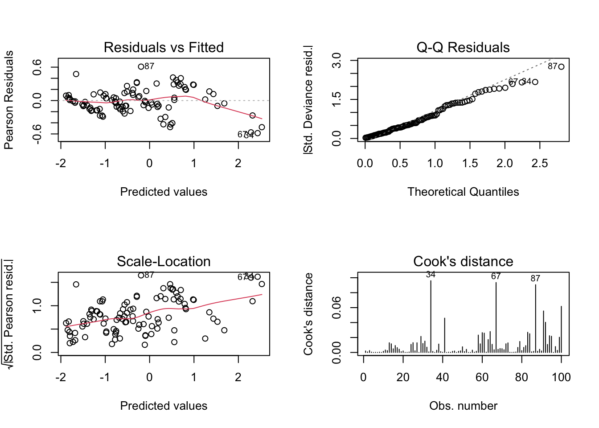
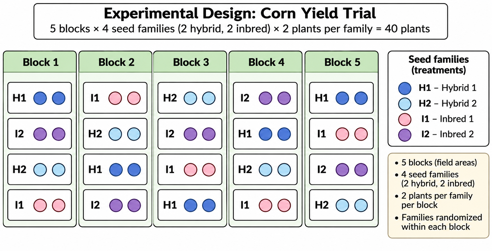

# Name - Queen's Student Number
# 1. Anna Goldfarb - BIOL343 Coding Challenge 8: Generalized linear models and experimental design
Group Members
DO THIS FIRST
Copy and paste these two lines into your R Console to install the current positpal, then restart R (Session → Restart R, or the restart button in the Console) before anything else. Do not include them as a code chunk.
install.packages("remotes")
remotes::install_url("https://quantitative.bio/downloads/positpal.tar.gz", upgrade = "never")After the restart, paste this line, replacing FILENAME.Rmd with the name you are going to use for the .R or .Rmd file you are going to upload (rename the template first, e.g. Group_#_CC8.Rmd, and use that exact name):
positpal::start("FILENAME.Rmd")Before you run it: create or open an R project folder for this challenge so that it is your working directory, then save this file in that folder under the name you will upload, and check that autosave is on (File → Auto Save). Closing the laptop or quitting Positron does not lose your log: when you reopen the project folder, positpal picks up where you left off and says so in the Console after your first command. Every time you open Positron to work on this file, run the start() line again, even if positpal says it picked up where you left off; it continues the same log and never erases it. See OnQ and use the positpal chatbot if you are having trouble with positpal.
Part 1 — Import and inspect
The data file is data/mytilus.csv: one row per population of blue mussels (Mytilus edulis), with the frequency of the 94y allele at the Lap locus, the population’s distance east along the coast in miles, and the substrate it was collected from. The instructions describe the study. Do not edit the file by hand.
So far every model you have fitted has assumed normally distributed residuals. This week the response is a proportion, and you will fit a model that does not make that assumption. The last two tasks are about how data like these are collected and how an experiment could be designed to answer the same kind of question.
As in earlier challenges, the tasks tell you what to produce, not which function to use. The starter lines in some chunks are commented out so that the blank template knits; remove the # as you fill them in.
Import and plot the cline
Import the data as an object called mytilus and check its structure. Plot the allele frequency (y) against distance (x), coloured by substrate, with axis labels, a legend title and a clean theme.
library(tidyverse)Warning: package 'ggplot2' was built under R version 4.5.2Warning: package 'tibble' was built under R version 4.5.2Warning: package 'tidyr' was built under R version 4.5.2Warning: package 'readr' was built under R version 4.5.2Warning: package 'purrr' was built under R version 4.5.2Warning: package 'dplyr' was built under R version 4.5.2Warning: package 'lubridate' was built under R version 4.5.2mytilus <- read.csv("/Users/annagoldfarb/Desktop/BIOL343/BIOL343-CC/CC8/data/mytilus.csv")
str(mytilus)'data.frame': 100 obs. of 3 variables:
$ lap94y_freq: num 0.162 0.154 0.173 0.156 0.145 0.152 0.147 0.143 0.152 0.154 ...
$ miles_east : num 0.3 1.4 2.1 2.6 2.8 2.9 5 6.4 6.5 11.4 ...
$ substrate : chr "Cobble" "Cobble" "Cobble" "Cobble" ...ggplot(mytilus, aes(x= miles_east,y= lap94y_freq, colour= substrate)) + geom_point() + labs(x= "Distance East of Southport (Miles)", y= "Lap94y Allele Frequency", colour= "Substrate") + theme_classic()
Question 1: Describe the shape of the relationship between allele frequency and distance. What values can the response take, and why does that make a linear model with normal residuals a poor choice for it?
Answer: The shape of the relationship between allele frequency and distance is similar to a logistic model. The response can take the values 0-1 because it is a proportion, and a linear model with normal residuals is inappropriate because it can predict values outside this range and assumes constant residual variance.
Part 2 — A logistic GLM
Linear model versus logistic GLM
Fit a linear model of allele frequency with distance and substrate as predictors, print the summary, and find the range of its fitted values. Then fit the same model as a generalized linear model for a proportion (binomial errors, logit link) and print the summary. Finally, refit the GLM so that it estimates the dispersion instead of assuming it, and print that summary too.
lm_mod <- lm(lap94y_freq ~ miles_east + substrate, data=mytilus)
summary(lm_mod)
Call:
lm(formula = lap94y_freq ~ miles_east + substrate, data = mytilus)
Residuals:
Min 1Q Median 3Q Max
-0.24112 -0.06784 -0.01041 0.05147 0.30475
Coefficients:
Estimate Std. Error t value Pr(>|t|)
(Intercept) 0.1075019 0.0271599 3.958 0.000145 ***
miles_east 0.0069245 0.0004364 15.869 < 2e-16 ***
substrateMud 0.0412184 0.0341773 1.206 0.230775
substrateRock 0.0692360 0.0391737 1.767 0.080337 .
---
Signif. codes: 0 '***' 0.001 '**' 0.01 '*' 0.05 '.' 0.1 ' ' 1
Residual standard error: 0.1105 on 96 degrees of freedom
Multiple R-squared: 0.795, Adjusted R-squared: 0.7886
F-statistic: 124.1 on 3 and 96 DF, p-value: < 2.2e-16range(fitted(lm_mod))[1] 0.1095792 1.0173667glm_mod <- lm(lap94y_freq ~ miles_east + substrate, data=mytilus, family=binomial(link="logit"))Warning: In lm.fit(x, y, offset = offset, singular.ok = singular.ok, ...) :
extra argument 'family' will be disregardedsummary(glm_mod)
Call:
lm(formula = lap94y_freq ~ miles_east + substrate, data = mytilus,
family = binomial(link = "logit"))
Residuals:
Min 1Q Median 3Q Max
-0.24112 -0.06784 -0.01041 0.05147 0.30475
Coefficients:
Estimate Std. Error t value Pr(>|t|)
(Intercept) 0.1075019 0.0271599 3.958 0.000145 ***
miles_east 0.0069245 0.0004364 15.869 < 2e-16 ***
substrateMud 0.0412184 0.0341773 1.206 0.230775
substrateRock 0.0692360 0.0391737 1.767 0.080337 .
---
Signif. codes: 0 '***' 0.001 '**' 0.01 '*' 0.05 '.' 0.1 ' ' 1
Residual standard error: 0.1105 on 96 degrees of freedom
Multiple R-squared: 0.795, Adjusted R-squared: 0.7886
F-statistic: 124.1 on 3 and 96 DF, p-value: < 2.2e-16glm_mod2 <- glm(lap94y_freq ~ miles_east + substrate, data=mytilus, family=quasibinomial(link="logit"))
summary(glm_mod2)
Call:
glm(formula = lap94y_freq ~ miles_east + substrate, family = quasibinomial(link = "logit"),
data = mytilus)
Coefficients:
Estimate Std. Error t value Pr(>|t|)
(Intercept) -1.892473 0.148615 -12.734 <2e-16 ***
miles_east 0.033230 0.002324 14.298 <2e-16 ***
substrateMud 0.235981 0.178181 1.324 0.1885
substrateRock 0.387219 0.194557 1.990 0.0494 *
---
Signif. codes: 0 '***' 0.001 '**' 0.01 '*' 0.05 '.' 0.1 ' ' 1
(Dispersion parameter for quasibinomial family taken to be 0.05246957)
Null deviance: 24.8737 on 99 degrees of freedom
Residual deviance: 4.8753 on 96 degrees of freedom
AIC: NA
Number of Fisher Scoring iterations: 4Question 2: Which predicted frequencies from the linear model are impossible? What does the warning from the binomial GLM mean? Compare the estimates and the standard errors of the two GLMs: what is the dispersion parameter of the second one, what would a value of 1 mean, and which of the two GLMs would you report?
Answer: The maximum allele frequency from the linar model is impossible because it is greater than 1. The warning means that the binomaial model expects counts rather than proportions in the response. The dispersion parameter of glm_mod2 was 0.0525. A value of 1 would mean that the observation variation matches the assumed binomial variation. I would report glm_mod2.
Reading the coefficients
The GLM’s estimates are on the logit (log-odds) scale. To turn a value Y on that scale into a frequency P, use
P = 1 / (1 + e^(−Y))
Using the estimates from your GLM, calculate Y and the predicted frequency for a Mud population at 10 miles and at 60 miles. Then add the fitted curve for each substrate to your plot from the first task.
Y10 <- -1.892473 + 0.033230 * 10 + 0.235981
Y60 <- -1.892473 + 0.033230 * 60 + 0.235981
P10 <- 1 / (1 + exp(-Y10))
P60 <- 1 / (1 + exp(-Y60))
Y10[1] -1.324192P10[1] 0.2101217Y60[1] 0.337308P60[1] 0.5835365ggplot(mytilus, aes(x= miles_east, y= lap94y_freq, colour= substrate)) + geom_point() + geom_smooth(method="glm", method.args=list(family=quasibinomial(link="logit")), formula=y~x, se=FALSE) + labs(x= "Distance East of Southport (Miles)", y= "Lap94y Allele Frequency", colour= "Substrate") + theme_classic()
Question 3: Report the two predicted frequencies. On the logit scale the distance effect is a straight line; what does the estimate for distance mean on that scale, and why does a change of 50 miles raise the predicted frequency by a different amount in the middle of the cline than at its ends?
Answer: The predicted frequencies are 0.2101 at 10 miles and 0.5835 at 60 miles. The distance coefficient of 0.03323 means that each additional mile east increases the log-odds of the allele by 0.03323. The middle of the cline is the steepest part of the curve since it is S-shaped, while the ends are closer to 0 or 1.
Part 3 — Quality checks
Check the model and the data
Make the standard diagnostic plots for your GLM, including the one that shows influential points. Look back at your plot of the data and at the diagnostic plots, and identify any populations that look problematic. Find their rows, and refit the model without them so you can see how much they matter.
par(mfrow = c(2, 2))
plot(glm_mod2, which = 1:4)
par(mfrow = c(1, 1))
cooks <- cooks.distance(glm_mod2)
problem_rows <- which(cooks > 4 / nrow(mytilus))
problem_rows 34 41 67 87 91 92 100
34 41 67 87 91 92 100 mytilus[problem_rows, ] lap94y_freq miles_east substrate
34 0.760 123.1 Mud
41 0.335 0.0 Mud
67 0.742 118.6 Mud
87 0.755 39.5 Rock
91 0.381 59.2 Rock
92 0.429 60.7 Rock
100 0.801 121.4 Rockmytilus_clean <- mytilus[-problem_rows, ]
glm_clean <- glm(lap94y_freq~miles_east+substrate, data= mytilus_clean, family= quasibinomial(link = "logit"))
summary(glm_mod2)
Call:
glm(formula = lap94y_freq ~ miles_east + substrate, family = quasibinomial(link = "logit"),
data = mytilus)
Coefficients:
Estimate Std. Error t value Pr(>|t|)
(Intercept) -1.892473 0.148615 -12.734 <2e-16 ***
miles_east 0.033230 0.002324 14.298 <2e-16 ***
substrateMud 0.235981 0.178181 1.324 0.1885
substrateRock 0.387219 0.194557 1.990 0.0494 *
---
Signif. codes: 0 '***' 0.001 '**' 0.01 '*' 0.05 '.' 0.1 ' ' 1
(Dispersion parameter for quasibinomial family taken to be 0.05246957)
Null deviance: 24.8737 on 99 degrees of freedom
Residual deviance: 4.8753 on 96 degrees of freedom
AIC: NA
Number of Fisher Scoring iterations: 4summary(glm_clean)
Call:
glm(formula = lap94y_freq ~ miles_east + substrate, family = quasibinomial(link = "logit"),
data = mytilus_clean)
Coefficients:
Estimate Std. Error t value Pr(>|t|)
(Intercept) -1.969976 0.120265 -16.380 <2e-16 ***
miles_east 0.039846 0.002173 18.338 <2e-16 ***
substrateMud 0.032224 0.147823 0.218 0.828
substrateRock 0.223031 0.161862 1.378 0.172
---
Signif. codes: 0 '***' 0.001 '**' 0.01 '*' 0.05 '.' 0.1 ' ' 1
(Dispersion parameter for quasibinomial family taken to be 0.03371595)
Null deviance: 22.950 on 92 degrees of freedom
Residual deviance: 2.966 on 89 degrees of freedom
AIC: NA
Number of Fisher Scoring iterations: 4cbind( Original = coef(glm_mod2), Without_influential = coef(glm_clean)) Original Without_influential
(Intercept) -1.89247281 -1.96997563
miles_east 0.03322954 0.03984649
substrateMud 0.23598134 0.03222368
substrateRock 0.38721935 0.22303088Question 4: Do the diagnostic plots show a problem with the model? If some populations look problematic, what happens to your model if you remove them? How could you deal with these problems if this was your project?
Answer: The diagnostic plots show that some observations may disproportionally effect the model. Removing them increases the distance coefficient and makes Rock substrate effect insignificant. I would investigate these populations for measurement errors, unusual environmental conditions, and sampling differences. I would look at the models with and without observations, consider other models, and collect more data.
Part 4 — Experimental design
Is it the substrate or the place?
Summarise the distance of the populations on each substrate (number of populations, smallest, mean and largest distance). Then fit your GLM with substrate as the only predictor, print the summary, and compare its substrate estimates with those from the model that also includes distance.
mytilus %>% group_by(substrate) %>% summarise(n=n(), min_distance = min(miles_east), mean_distance = mean(miles_east), max_distance = max(miles_east))# A tibble: 3 × 5
substrate n min_distance mean_distance max_distance
<chr> <int> <dbl> <dbl> <dbl>
1 Cobble 17 0.3 10.1 27
2 Mud 57 0 45.3 123.
3 Rock 26 21.9 52.8 121.glm_substrate <- glm(lap94y_freq~substrate, data = mytilus, family = quasibinomial(link = "logit"))
summary(glm_substrate)
Call:
glm(formula = lap94y_freq ~ substrate, family = quasibinomial(link = "logit"),
data = mytilus)
Coefficients:
Estimate Std. Error t value Pr(>|t|)
(Intercept) -1.5316 0.2675 -5.726 1.15e-07 ***
substrateMud 1.3821 0.2900 4.766 6.60e-06 ***
substrateRock 1.7024 0.3148 5.408 4.58e-07 ***
---
Signif. codes: 0 '***' 0.001 '**' 0.01 '*' 0.05 '.' 0.1 ' ' 1
(Dispersion parameter for quasibinomial family taken to be 0.1777965)
Null deviance: 24.874 on 99 degrees of freedom
Residual deviance: 18.404 on 97 degrees of freedom
AIC: NA
Number of Fisher Scoring iterations: 4cbind(Substrate_only = coef(glm_substrate), With_distance = coef(glm_mod2)[names(coef(glm_substrate))]) Substrate_only With_distance
(Intercept) -1.531566 -1.8924728
substrateMud 1.382095 0.2359813
substrateRock 1.702442 0.3872194Question 5: Why are the substrate effects so much larger when distance is left out of the model? Is this study an experiment or an observational survey, and which element of a designed experiment is missing that would let you separate the effect of substrate from the effect of place? Briefly describe an experiment that could test whether substrate itself affects 94y frequency (or survival of 94y carriers).
Answer: The substrate effects are larger when the distance is left out because substrate type and location are confouded. This study is an observational survey because the substrate type was not randomly assigned. The missing element is randomization. To test whether substrate directly affects 94y frequency or survival, I would randomly assign mussels with known 94y genotypes to Cobble, Mud, and Rock substrates at multiple locations, using replicated experimental units. I would then compare survival and changes in allele frequency across substrates while controlling for location.
Laying out a field trial
A plant breeder wants to compare grain yield of hybrid and inbred corn. The trial has 5 blocks (areas of a field) and 4 seed families: 2 hybrid and 2 inbred. Every family is planted in every block, with 2 plants per family per block, and the plants are placed at random within each block.
Draw a diagram showing the experimental design. You don’t have to draw out every single plant, but make sure the design is clear, and you have labelled blocks and individuals, and which individuals belong to the same seed family (hint: using shapes or colours with a legend can help here). Draw it by hand or with any drawing tool, save it as an image (e.g. design.png) in your project folder, and show it in this document by adding a line  below this paragraph (outside any code chunk).

Question 6: What is the replicate for the comparison of hybrid and inbred corn: a plant or a family? How many independent replicates of each line does the trial have, and what would be wrong with analysing the 40 plants as independent replicates? Why is every family planted in every block, with positions randomized within blocks, rather than (say) all hybrids in blocks 1–2 and all inbreds in blocks 3–5?
Answer:
DO THIS LAST
When your document is finished, knit it, open the .html in a web browser and print it to PDF (File → Print → Save as PDF; name it Group_#_CC8.pdf). Then copy and paste this into the R Console to stop positpal and create your coding log. Do not include it as a code chunk.
positpal::stop_capture()
positpal::export_capture()export_capture() prints the name and location of the my-capture-YYYYMMDD-HHMMSS.zip it creates beside this file. Each group member uploads their own .zip to the “CC8 — Coding Log (individual)” dropbox on OnQ; the group’s .Rmd, .html and .pdf (OnQ shows uploaded HTML as source code, so the PDF is what gets graded; the .html is a back-up) go to your section’s TUT02-CC8 or TUT03-CC8 folder. Submissions without the log are incomplete. If export_capture() fails, zip the .capture folder yourself and upload that instead.